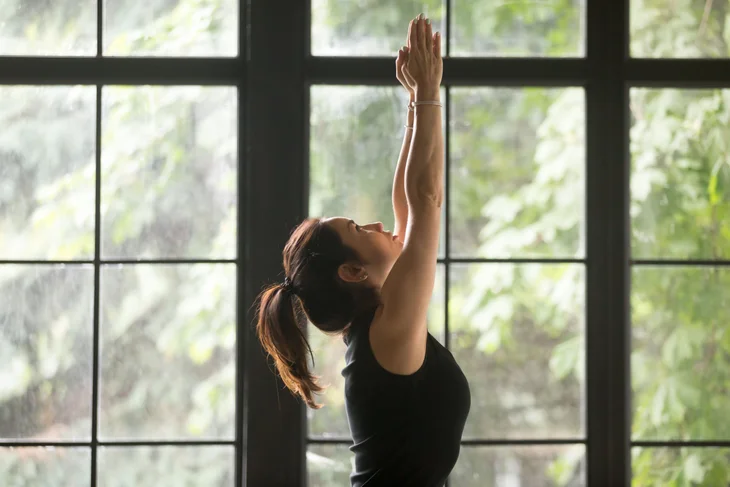
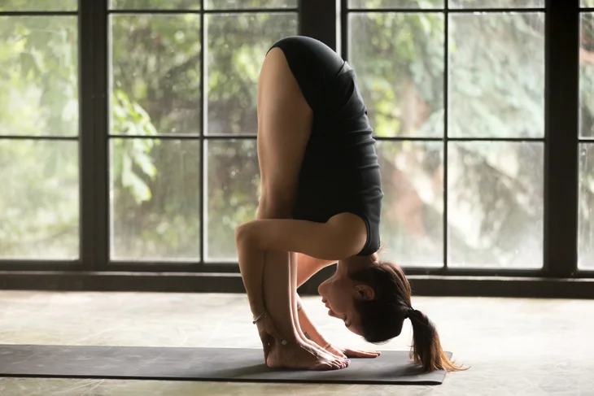
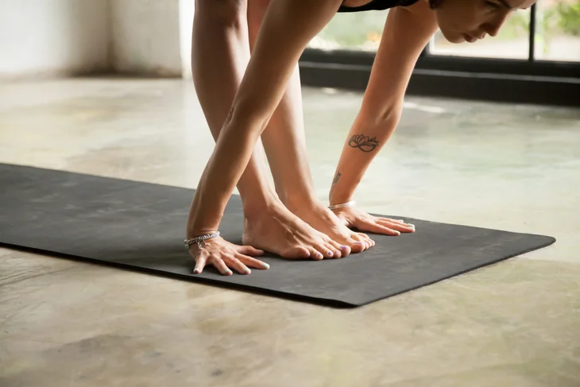
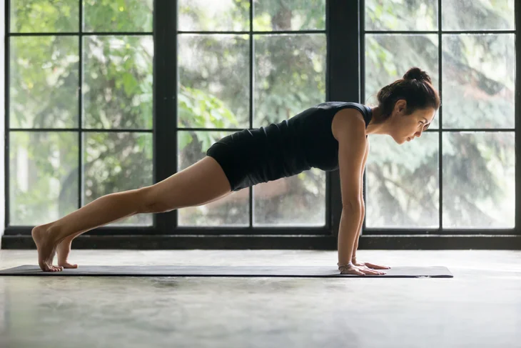
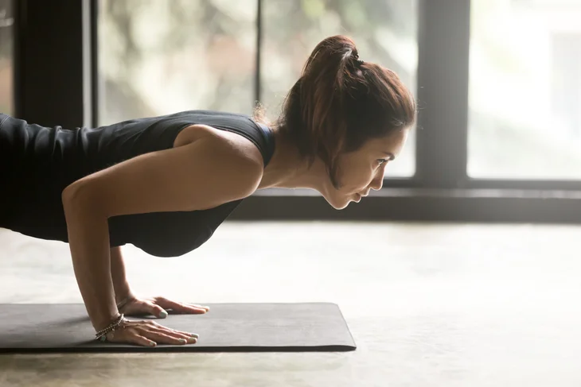
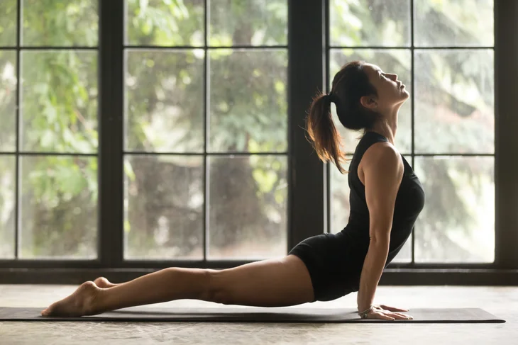
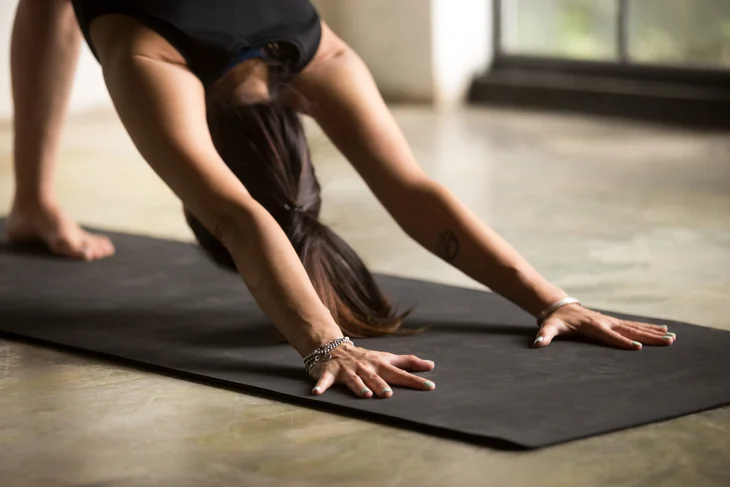

Tadasana

Urdhva Hastasana

Uttanasana

Ardha Uttanasana

Plank Pose

Chaturanga Dandasana

Urdhva Mukha Svanasana

Ardha Uttanasana
Uttanasana
Tadasana
Urdhva Hastasana
Uttanasana
Ardha Uttanasana
Plank Pose
Chaturanga Dandasana
Urdhva Mukha Svanasana
Ardha Uttanasana
Uttanasana
Stand with your feet together and your arms at your side. Distribute your weight evenly between your feet and turn your palms to face forward in Tadasana. Let yourself come to a slow, steady breath. Find your own center as you bring your palms together at the center of your chest in Anjali Mudra (also known as Salutation Seal or, quite simply, prayer hands).
Inhale and sweep your arms straight out to the sides and up alongside your ears into Urdhva Hastasana. Your palms should face one another, and you can bring them to touch if desired. Reach your heart and arms toward the sun. If you like, you can gaze slightly upward and even take a slight backend here, lifting your chest and leaning your upper body slightly back.
Exhale and bend forward at your hips, bringing your chest to your thighs. Keep your legs strong by drawing your knees toward your hips. Let your shoulders and neck relax. Your hands can rest on your shins, ankles, or blocks in Uttanasana.
Inhale as you lift your chest parallel to the mat in Ardha Uttanasana. (As the name of the pose implies, you’ll literally be halfway to standing.) Draw your shoulder blades away from your ears and lengthen through your back. You can keep your palms or fingertips on the floor or bring them to your shins or blocks.
Exhale and step your feet back into Plank Pose, which is essentially the top of a push-up. Align your body so your shoulders are directly over your wrists, your palms are flat on the mat, and your feet are hip-distance apart. (Lower your knees to the mat if you ache in your low back, shoulders, or arms.) Gaze down and slightly forward, keeping the back of your neck long. Inhale and lengthen through your back.
Exhale and bend your elbows as you slowly lower your entire body, keeping yourself as straight as a plank of wood. Hug your elbows in toward your sides and pause when you find a right angle between your upper and lower arms. Gaze down and slightly forward. You’ll find yourself building heat as you hold this challenging posture. (If your knees were on the mat in Plank Pose, simply keep them there and lower your upper body.)
Inhale and draw your chest forward and up as you roll forward over your toes onto the tops of your feet into Urdhva Mukha Svanasana. Press the tops of your toes into the mat and keep your legs strong but relax your gluteal muscles. Pull your shoulders back and broaden through your collarbones. Gaze straight ahead or slightly up. (Instead of rolling over your toes, you can lift and place your feet, one at a time, on the mat. If this backbend feels too intense, instead come into Bhujhangasana or Cobra Pose.)